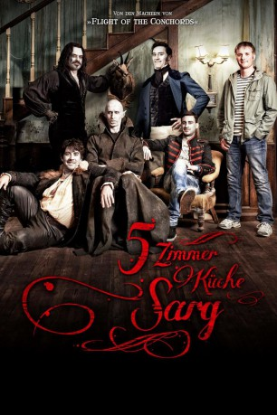
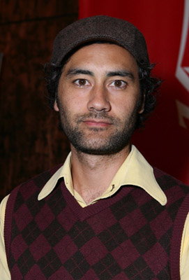
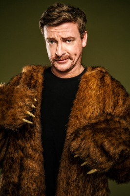
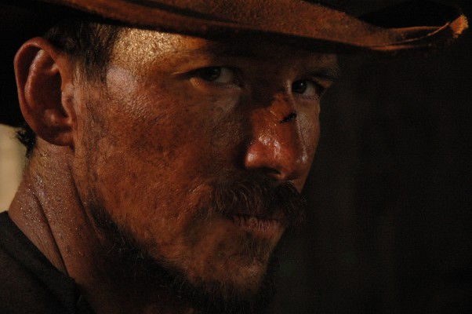
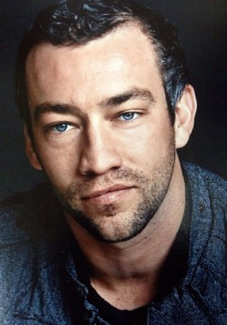

#3008 5 Zimmer Küche Sarg
 
 IMDB-Wertung: 7.6 / 10
IMDB-Wertung: 7.6 / 10  Metascore: 76
Metascore: 76 
Die Vampire Viago, Vladislav, Deacon und Petyr teilen sich eine Villa in Wellington. Abgesehen vom fehlenden Spiegelbild, einseitiger Ernährung und gelegentlichen Auseinandersetzungen mit Werwölfen unterscheidet sich ihr Alltag kaum von dem einer ganz normalen WG: Streitereien um den Abwasch und gemeinsame Partynächte stehen täglich auf dem Programm. Als der 8000-jährige Petyr den coolen Mittzwanziger Nick zum Vampir macht, müssen die anderen Verantwortung für den impulsiven Frischling übernehmen und ihm die Grundregeln des ewigen Lebens beibringen. Im Gegenzug erklärt ihnen Nick die technischen Errungenschaften der modernen Gesellschaft. Als er aber seinen menschlichen Freund Stu anschleppt, gerät das beschauliche Leben der Vampir-Veteranen völlig aus den Fugen.
Jahr: 2014
Dauer: 85 Minuten
FSK: 12
Land: Neuseeland Studio: Weltkino FilmverleihTonspuren: DTS - ,
Untertitel:
Auflösung: 1080p (1920x1040) Größe: 6707 MB
Genre: Horror, Komödie
Regisseur: Jemaine Clement, Taika Waititi
Drehbuch: Jemaine Clement, Taika Waititi
Soundtrack: Plan 9
Darsteller:
- Jemaine Clement als Vladislav
-  Taika Waititi als Viago
- Jonny Brugh als Deacon
- Ben Fransham als Petyr
- Jackie van Beek als Jackie
- Chelsie Preston Crayford als Josephine
- Kura Forrester als Margaret, Viago's Victim
- Luke Bonjers als Vladislav's Victim
-  Rhys Darby als Anton - Werewolf
-  Cohen Holloway als Dion, werewolf
- Rodney Cook als Mauled Cameraman - Dave
 Adolf Hitler als Himself , archive footage, uncredited
Adolf Hitler als Himself , archive footage, uncredited- Jennifer Martin als Tracy , uncredited
- Christopher Winchester als Vampire , uncredited
- Cori Gonzalez-Macuer als Nick
- Stu Rutherford als Stu
- Elena Stejko als Pauline Ivanovich, The Beast
- Jason Hoyte als Julian
- Karen O'Leary als Officer O'Leary
- Mike Minogue als Officer Minogue
- Ian Harcourt als Zombie
- Ethel Robinson als Katherine
- Brad Harding als Vampire Hunter
- Isaac Heron als Fix Attendant
- Yvette Parsons als Carol, Vampire Witch / MC
- Madeleine Sami als Morana
-  Aaron Jackson als Boogie Wonderland Bouncer
- Morgana Hills als Child Vampire
- Morag Hills als Child Vampire
- Frank Habicht als Phillip
- Maurice Kapua als Kumara Bouncer
- Denis Welch als Hypnotised Man / Vladislav's Victim
- Mario Gaoa als Bouncer Richie
- Simon Vincent als Matt, werewolf
- Duncan Sarkies als Declan, werewolf
- Nathan Meister als Nathan M, werewolf
- Tanemahuta Gray als Nathan G, werewolf
- Ruby Vincent als World War II extra
- Jason Cook als World War II extra
- Matthew Harvey-White als World War II extra
- Matthew Dravitzki als World War II extra
- Roland Hunter als World War II extra
- Stan Alley als World War II extra
- Lucy Marinkovich als Succubus
- Melanie Hamilton als Succubus
- Anna Flaherty als Succubus
- Aaron Lewis als Aaron The Zombie
- Belle Gwilliam als Alisha The Zombie
- Christian Alexander als Vampire , uncredited
- Tim Capper als Werewolf , uncredited
Datei: X:\2014(A-F)\5 Zimmer Küche Sarg (2014, FSK12, 1920x1040).mkv seit 19.01.2016
Festplatte: HD 2013(I-Z)-2014(A-Z)
 Es gibt insgesamt 119 Filme in der Gruppe '2014(A-F)'
Es gibt insgesamt 119 Filme in der Gruppe '2014(A-F)'